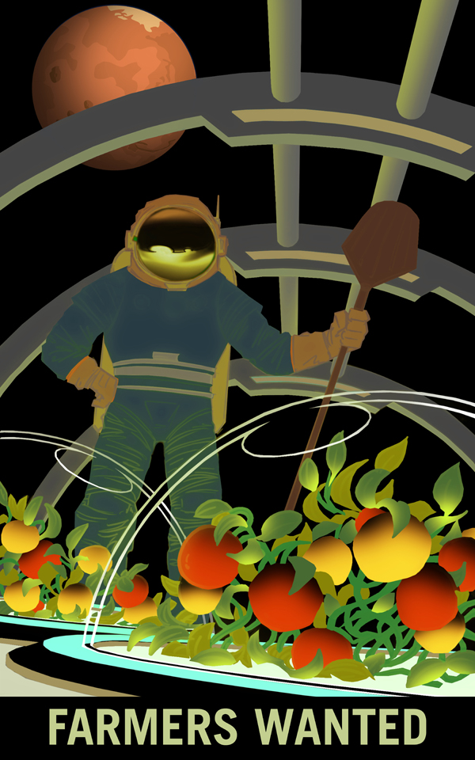
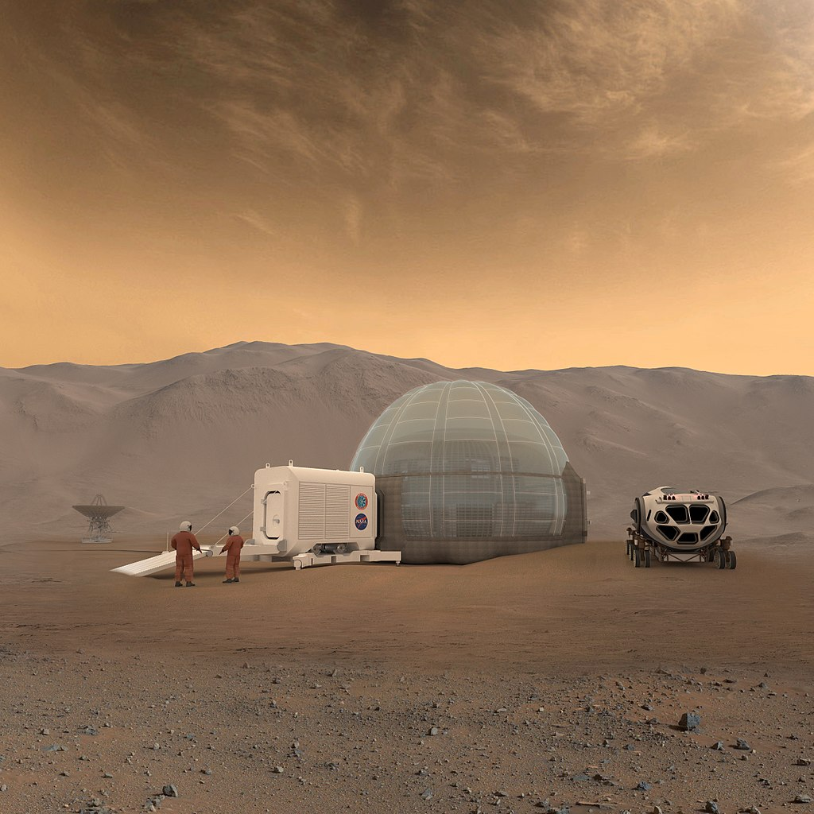

ABOUT PLANETS
SOUND ON


Mars: The year is now 34 AE (After Earth). Humanity has lost its planet and has been travelling through space in search of a new home. The AD millennia ended with entire civilizations crumbling into dust and its population annihilated to a mere quarter of 7 billion. Once a planet brimming with life, it is now a skeleton of its former glory. Three large aircrafts approach upon the red planet of Mars – once a red star in the night sky is now a looming orb of a second home that is as unwelcoming as its barren landscape. Touching upon the desert sand, heartbeats are loud against the whispers of the storm. They shiver at the sight of a cold, dead vast expanse of rocks on the dusty surface. Their steps are light and they float through the air just by a brush of a footstep. As one, they venture into uncharted territory, blinded by the winds of the storm and the dust that dances across their vision. People huddle together for comfort as they walk towards a peak that touches the scarlet skies of its toxic atmosphere. It is Olympus Mons and it rises as a beacon of shelter. There is a settlement by their predecessors and they must arrive before the setting of the sun. As they reach the foot of the mountain, they see the shadows of the very first explorers from Earth standing side by side, their solar panels glinting in the light, and there humanity is reminded of one's own inquisitive nature. Opportunity and Curiosity.
The space race to send people to Mars has never been more fierce, with private companies such as Blue Origin,
SpaceX, Boeing, etc. working closely with government space agencies around the world to plan out our species' next biggest step.
In our effort to establish the second human colony on Mars, not only do we have to solve engineering problems, but argricultural, geological, medical, psychological, and many more
aspects as well. To build a self-sustainable colony on Mars, we have to ensure that it is able to cater for itself (it would take
too long for Earth's resource to reach Mars) when it comes to resource, be it for humans or machines. Therefore, in the not-so-far-away future,
not only will we need engineers and scientists on Mars, but teachers, gardeners, musicians, artists, construction workers, doctors; people from all
facets of life will have to work hand-in-hand to fulfill the goal of humankind becoming the true space-faring species.
It is also exciting to see what Earth could benefit from such technological advancements; how we can apply those tech to help us improve
the quality of our first home.
For Mars, I intended for the soundscape to exude somewhat of an eerie, and bleak atmosphere. The accompanying story depicts a scene where
humans slowly evacuate from the dying planet Earth. As they approach the looming red planet, several thoughts pop up in their heads, from
the scarcity of resource to the vast and empty inhabitable landscape on which to become their new home, most likely until their last breath.
The musical elements are a constant heartbeats, a human element, against the background of uncertain Mars elements, ranging from
the scratchy dust-wind, to the haunting cry of the far-away storm hovering in the lower atmosphere. It is sonic juxtaposition of human against
nature on this dead planet.